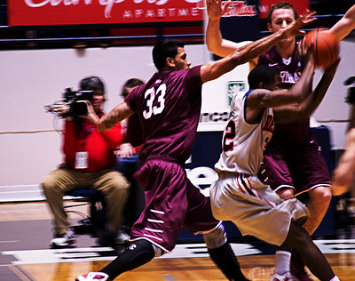

Die Basketballabteilung des DJK Südwest ist eine der größten Basketballabteilungen Deutschlands. Im Ranking des Deutschen Basketballbundes rangiert Südwest auf Grundlage der aktiven Spielerpässe regelmäßig unter den 30 spielerstärksten Vereinen im ganzen Land und lässt damit sogar diverse bekannte Bundesliga-Standorte hinter sich. Dies resultiert aus der hohen Anzahl an Seniorenteams, aber auch aus einer durchgängigen Förderung von Jungen und Mädchen im Nachwuchsbereich. Dabei zählt der DJK Südwest 8 Herrenmannschaften, 3 Damenmannschaften und 11 Jugendmannschaften. Der Verein schafft so ein lückenloses Angebot ab etwa zehn Jahren bis ins Seniorenalter.
Viele der heutigen Seniorenbasketballer waren auch schon Teil der Jugendförderung – und der Nachwuchs der Seniorenteams spielt regelmäßig auch in den Jugendteams. Trotz einer beachtlichen Anzahl an Spielern und Teams besteht eine enge Verbindung und Austausch zwischen den Teams – was sich beispielsweise auch in gemeinsamen Turnierteilnahmen (die „Oldies“ der Ü35/Ü40 spielt regelmäßig um den Titel des Deutschen Meisters), Sommerfesten, Trainingsspielen oder geselligen Abenden zeigt. Aber auch die Leistungsorientierung kommt nicht zu kurz. So spielen die jeweils ersten Mannschaften der Damen und Herren seit Jahren konstant auf ambitioniertem Oberliga-Niveau und gehören damit zu den besten Teams in Köln und NRW. Das Angebot der DJK Südwest Basketballer ist so breit angelegt, dass jeder Breitensportler seine passende Mannschaft finden kann – von der Oberliga bis zur Kreisliga.

Die U16 gehört zu einer der leistungsorientierteren Jugendteams beim DJK Südwest. Viele der Jungs (ab der U16 spielen Jungs und Mädels im Basketball geschlechtergetrennt) sind bereits seit der U10 oder U12 Spieler im Verein und haben eine frühe sportartspezifische Ausbildung durchlaufen. Auch auf höheren Ebenen haben viele der Nachwuchsbasketballer bereits erste Erfahrungen gesammelt. Um in der U16 an den Start zu gehen, sollte also eine Portion Motivation und Leistungswille bestehen.
Von den Jungbasketballern der U16 wird – was die Trainings- und Spieltagsdisziplin betrifft – bereits sehr viel Eigenverantwortung vorausgesetzt. Spieler und Eltern organisieren sich selbstständig für Auswärtsfahrten oder Turnierteilnahmen.